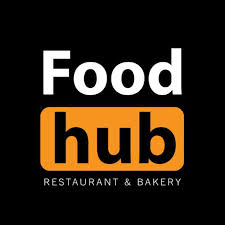
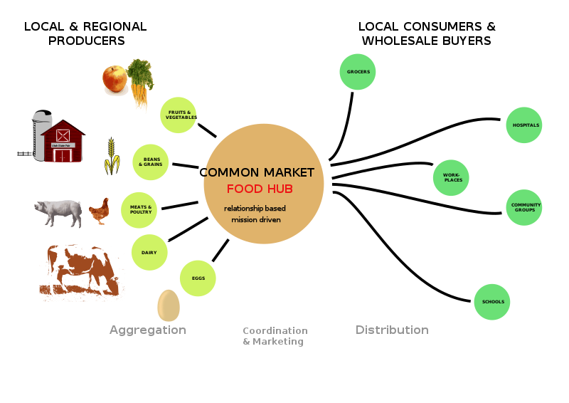
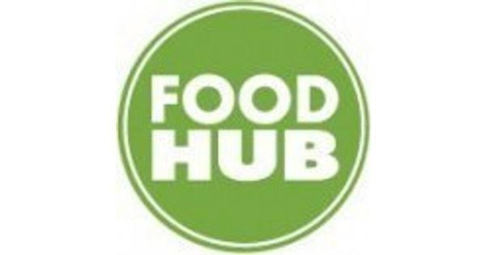
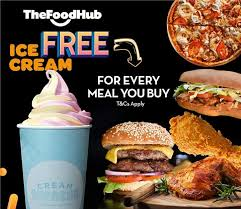
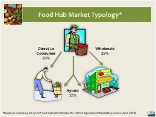
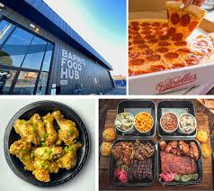

|  | foodhub |
|
|
|
A food hub, as defined by the USDA, is “a centrally located facility with a business management structure facilitating the aggregation, storage, processing, distributions, and/or marketing of locally/regionally produced food products.Food hubs are a part of the agricultural value chain model and often share common values relating to conservation, sustainability, healthy food access, and supporting local farmers. |
|  |  |  |  |  |